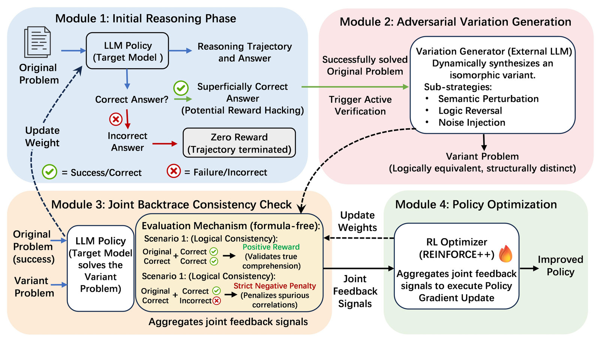
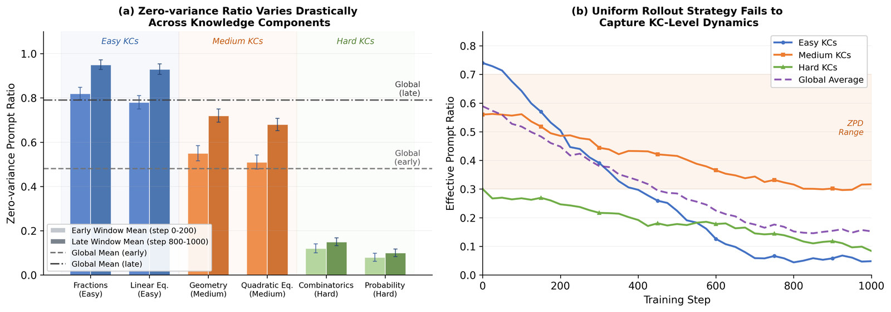
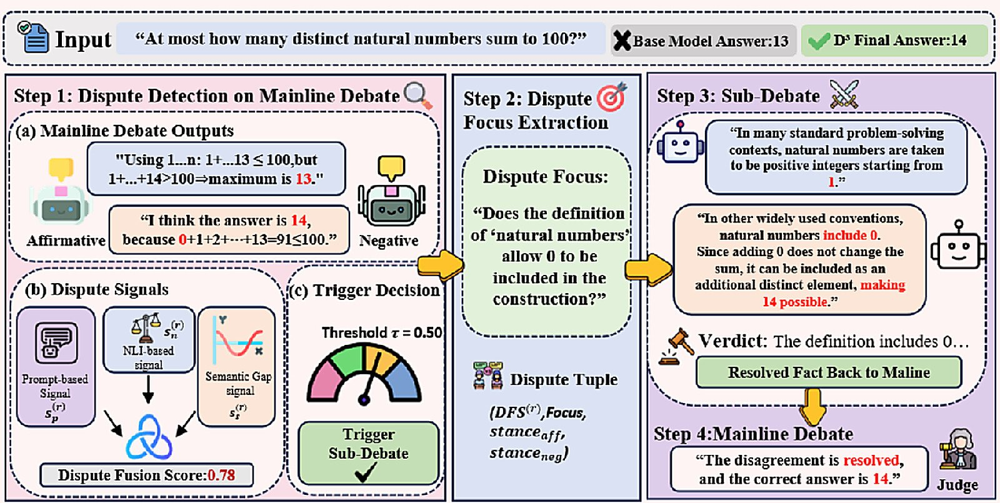
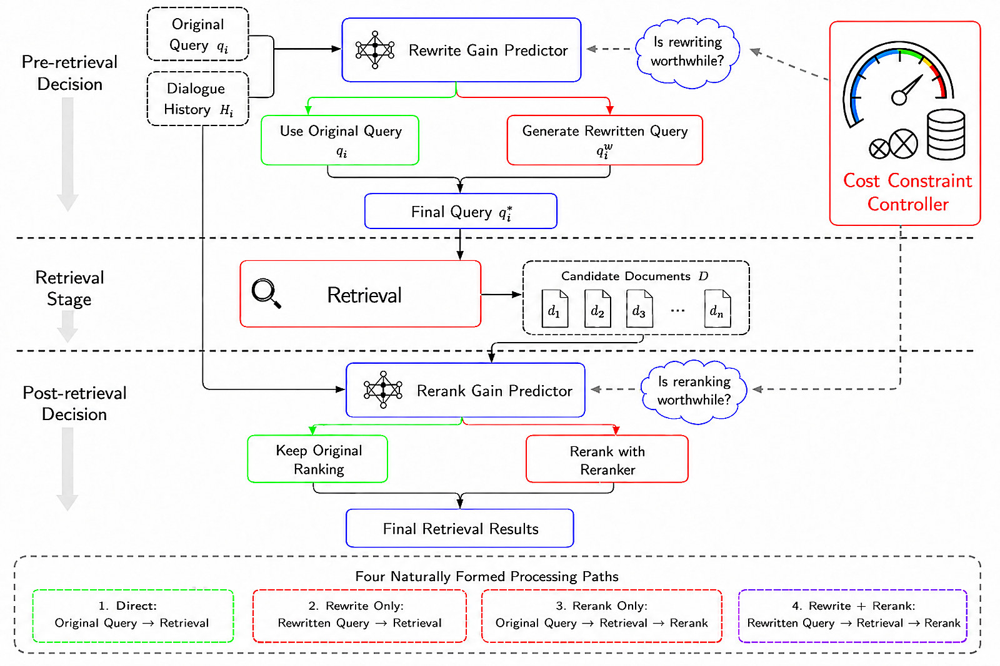
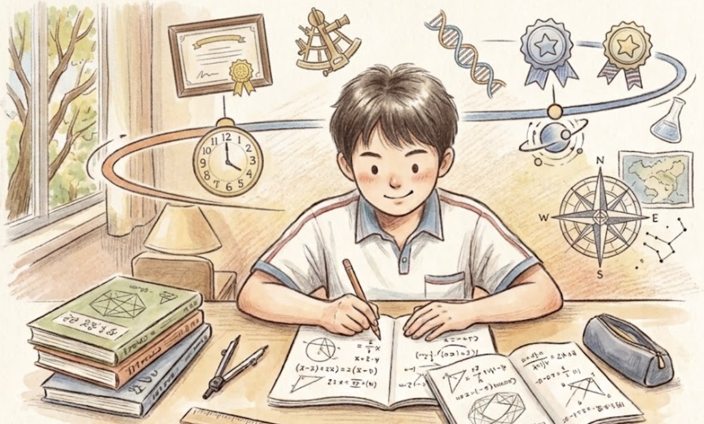
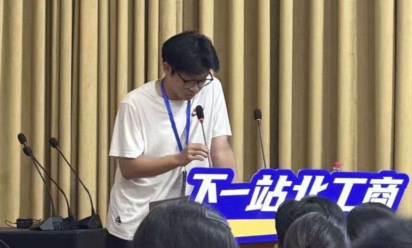

About Me
我预计于 2027 年在北京工商大学计算机技术专业获得工学硕士学位，师从李静远教授。2024 年获齐鲁工业大学（山东省科学院）计算机科学与技术学士学位。我的研究兴趣包括：
- 强化学习在可验证奖励训练中的奖励作弊诊断与修正
- 面向教育场景的训练效率优化与知识点感知采样
- LLM-as-judge 的可信度校准与模型评测体系
Work Experience
2026
在猿辅导 AI Lab 实习，参与了自研大模型 kanyun 的开发与优化。
2025
参与河南省重点研发专项（No.241111211900）项目。
Latest News
2026.09
我们的论文 RESOLVE 被 ICANN 2026 接收，并赴意大利进行论文展示。
2026.08
我们的论文 EduSRO 被 CCF Big Data 2026 接收，并赴哈尔滨进行论文展示。
2026.05
担任 ICANN 2026 论文评审（sub-reviewer）。
2026.03
我们的论文 D³ 被 KSEM 2026 接收。
Publications
已发表 / 已录用

2026.05 RESOLVE: Reward Scaling via Online Logic Variation Environments for Mitigating Reward Hacking in LLMs Shuaishuai Zhang, Yu Wang, Jingyuan Li*, Yifan Liu International Conference on Artificial Neural Networks (ICANN) 2026
2026.06 EduSRO: Efficient Reinforcement Learning for K-12 Science Education via Knowledge-Component-Aware Selective Rollout Optimization Shuaishuai Zhang, Jingyuan Li*, Yuanzhuo Wang CCF Conference on Big Data (CCF Big Data) 2026
2026.03 D³: Dispute-Driven Debate for Stabilizing Multi-Agent Reasoning in Large Language Models Yifan Liu, Yu Wang, Shiqi Sun, Shuaishuai Zhang International Conference on Knowledge Science, Engineering and Management (KSEM) 2026
2026.09 CASER: Cost-Aware Selective Enhancement for Conversational Retrieval Liang Cheng, Hao Wang, Jingyuan Li*, Miao Liu, Yifan Liu, Shuaishuai Zhang IEEE/WIC International Conference on Web Intelligence and Intelligent Agent Technology (WI-IAT) 2026在投 / 在审
ASOC · Q1
Robust Verifiable Reasoning: A Consistency Guided Reinforcement Learning Framework for Large Language Models
Zhang S, Li J*, et al.
Applied Soft Computing (ASOC)审稿中
COLING 2027
EIG-Mem: Uncertainty-Aware Memory Value Estimation for Long-Term Memory Retrieval
, Zhang S, et al.
International Conference on Computational Linguistics (COLING) 2027审稿中
* 通讯作者
Awards & Honors
- CET-6 563 分
- 优秀毕业生 · 2024
- 三好学生 · 2024
- 教师资格证（数学）
- “院际杯”篮球冠军 2025
- “院际杯”足球冠军 2026，亚军 2025
- 校运会跳高银牌 2025
Life

